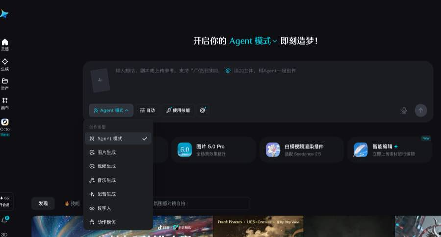
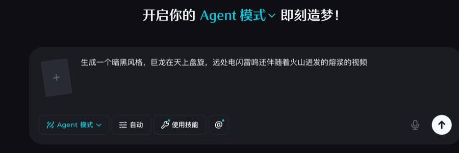
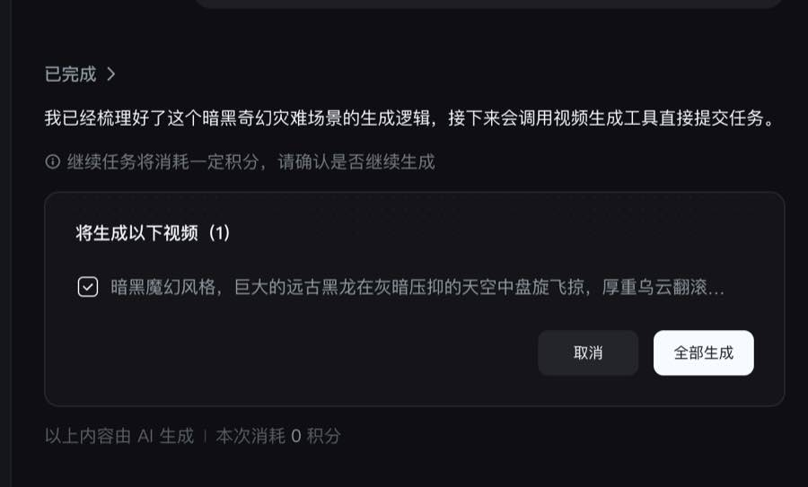

即梦 Agent 模式
产品拆解
从一句视频需求，到 Agent 扩写生成方案，再到积分确认门。当前证据截止在“全部生成”之前，因此报告能确认规划与确认流程，不能确认视频工具真正执行或最终成片质量。
1. 执行摘要
页面只显示“Agent 模式”，没有具名专业 Agent。
图片、视频、音乐、配音、数字人、动作模仿。
调用视频生成前提示积分，并提供取消/全部生成。
截图未显示任务执行、视频预览或资产落库。
2. 查看范围、证据与缺口



| 证据 | 页面原文/控件 | 可见状态 | 支持结论 | 限制 |
|---|---|---|---|---|
| S01 | “开启你的 Agent 模式 即刻造梦！”；“输入想法、剧本或上传参考”；“使用技能”；“@ 添加主体”；创作类型菜单 | Agent 模式已选；积分余额 66；可切换 6 类创作 | 统一输入面、技能入口、主体引用、余额入口 | 入口存在不等于技能/主体已被调用 |
| S02 | “生成一个暗黑风格，巨龙在天上盘旋，远处电闪雷鸣还伴随着火山迸发的熔浆的视频” | 需求已填写；未见参考素材 | 原始用户需求及提交前状态 | 截图未显示点击提交瞬间与规划耗时 |
| S03 | “已完成”；“接下来会调用视频生成工具”；“继续任务将消耗一定积分”；“取消”；“全部生成”；“本次消耗 0 积分” | 1 条方案被选中，等待用户确认 | 规划产物、工具调用计划、积分确认门、中断入口 | 未显示实际积分数、生成任务、失败或最终视频 |
| O01 | 即梦官方页面可见 Agent 模式、图片/视频/音乐/配音/数字人/动作模仿及技能入口 | 公开产品能力面 | 截图之外的入口名称交叉验证 | 动态页面会更新；不证明本次任务执行 |
3. 产品类型与功能域适用性
主类型是媒体创作；次类型是技能驱动的 Agent 工作台。分析咨询、企业审批等领域不适用。
| 功能域 | 状态 | 即梦中的对应物 | 证据 | 备注 |
|---|---|---|---|---|
| 统一创作入口 | observed | Agent 模式 + 自然语言输入 | S01–S02 | 支持文本、剧本、参考上传提示 |
| 技能/主体引用 | partial | “使用技能”、“@” | S01–S02 | 入口可见，实际选择与执行未观察 |
| 创作规划 | observed | 生成逻辑摘要 + 1 条视频方案 | S03 | 公开的是结果摘要，不是隐藏思维链 |
| 确认与计费 | partial | 积分提示、取消、全部生成 | S03 | 确认门存在，精确价格未显示 |
| 视频生成 | partial | “接下来会调用视频生成工具” | S03 | 只有计划，没有执行/结果证据 |
| 资产/画布 | partial | 左侧“资产”“画布”入口 | S01 | 没有本任务资产或画布变化 |
| 编辑/发布/下载 | not observed | 当前截图范围未出现 | S01–S03 | 只代表本次范围未观察 |
| 分析咨询/企业工作流 | not applicable | — | 产品类型判断 | 不套用无关模板 |
4. 用户旅程证据表与三泳道图
| 阶段 | 用户目标 | 用户动作 | 页面反馈 | 用户决定 | 页面/资产变化 | 情绪与阻力 | 证据 |
|---|---|---|---|---|---|---|---|
| J01 选择创作方式 | 用自然语言完成视频 | 选择“Agent 模式”；也可切到视频生成等直接模式 | 显示统一输入框、自动、使用技能、@、上传和语音 | Agent 自动编排，还是直接使用单项生成器 | 当前模式高亮 | 入口丰富，但“自动”究竟自动决定什么不透明 | S01 |
| J02 描述需求 | 生成暗黑奇幻灾难视频 | 输入巨龙、雷电、火山熔浆的场景描述 | 输入内容保留；提交箭头可用 | 提交、补充素材/主体/技能或退出 | 形成当前用户需求 | 一句话门槛低；时长、比例、镜头、模型与预算均未指定 | S02 |
| J03 Agent 整理方案 | 把模糊需求变成可生成任务 | 提交后等待 | 显示“已完成”与生成逻辑摘要；产生 1 条更具体的视频描述 | 接受这条方案，或取消 | 新增方案卡；默认勾选 1 条 | Agent 有价值地补足氛围，但用户看不到参数和修改入口 | S03 |
| J04 生成前确认 | 控制积分消耗 | 查看计划与积分提示 | “继续任务将消耗一定积分”；按钮“取消/全部生成” | 继续 / 中断 | 尚未出现生成任务；规划阶段显示消耗 0 积分 | 风险可控，但具体将扣多少积分不清楚 | S03 |
| J05 提交视频工具 | 开始生成 | 点击“全部生成” | 【未知】截图只说下一步会调用工具 | 生成中继续等待、取消或重试 | 【未知】任务/资产/扣费状态 | 最关键的执行与可恢复性缺失 | 超出 S03 |
| J06 查看与修改成片 | 验收、纠偏、导出 | 【未知】 | 【未知】 | 满意/不满意；局部修改/重新生成 | 【未知】视频、资产版本、画布、编辑器 | 没有证据确认闭环是否顺畅 | 尚需补证 |
S01
S02
S01
S03
取消 / 全部生成
继续→计划调用
5. 九层产品架构
6. Agent 清单、能力边界与 I/O 契约
Agent 模式（未显示专名）
1. 核心目标
把用户的自然语言、剧本和可选参考，整理为可确认的媒体创作任务，并在获得用户确认后交给对应生成工具。
2. 触发条件
用户选择“Agent 模式”并提交创作需求。S01–S02
3. 输入契约
- 用户当前输入：文本需求；可选参考上传、技能选择、@主体、语音。
- 用户长期信息：页面可见积分余额；会员、偏好、历史资产读取【未知】。
- 项目上下文：当前模式、自动设置、选择的技能/主体/参考；稳定字段名【未知】。
- 上游 Agent：未发现。
- 平台公共资产：技能和创作类型目录可见；具体规则【未知】。
- 运行结果：规划后的方案卡与确认状态。
4. 可观察判断
- 识别请求属于视频生成。
- 将一句需求扩展为更具体的暗黑魔幻视频描述。
- 决定本轮产生 1 个待生成视频。
- 在视频工具调用前请求用户确认积分消耗。
5. 输出
- 用户回复：生成逻辑已经梳理、下一步工具计划。
- 页面组件：方案卡、勾选框、取消、全部生成、积分提示。
- 结构化对象：1 个候选视频任务【合理推断】。
- 资产：只有文字方案；视频资产未出现。
- 下游任务：计划交给视频生成工具。
6. 完成条件
在当前证据中只能确认“规划完成”。端到端完成必须另行验证：任务创建、积分状态、视频资产存在、可播放、与需求一致、页面状态同步。
功能工具表
| ID | 功能性名称 | 调用者 | 前置条件 | 执行证据 | 成功结果 | 失败/重试 | 等级 |
|---|---|---|---|---|---|---|---|
| T01 | 读取多模态创作输入 非官方工具名 | A01 | 文本/剧本/参考已提交 | 输入入口可见；本次仅文本 | 形成当前需求 | 格式、大小、解析失败未知 | 入口【已确认】；执行范围【部分】 |
| T02 | 选择/使用技能 非官方工具名 | A01/用户 | “使用技能”或自动模式 | 只有按钮 | 应绑定某项能力 | 未知 | 能力入口【已确认】；调用【未知】 |
| T03 | 生成视频任务方案 非官方工具名 | A01 | 提交需求 | 扩写描述与 1 条方案卡存在 | 待确认视频任务 | 修改/重规划机制未知 | 结果【已确认】 |
| T04 | 检查积分并建立确认门 非官方工具名 | 产品界面/A01 | 准备调用付费生成 | “一定积分”提示和按钮 | 记录继续或取消 | 余额不足路径未知 | 页面【已确认】；后台检查【推断】 |
| T05 | 视频生成工具 页面功能命名 | A01 下游 | 用户点“全部生成”且额度满足 | Agent 只说“接下来会调用” | 视频任务/媒体资产 | 失败、重试、扣费未知 | 计划【已确认】；执行【未知】 |
| T06 | 写入资产/画布 非官方工具名 | 生成服务 | 工具成功 | 只有导航入口 | 资产版本和画布节点 | 写入失败未知 | 【未知】 |
Agent 状态机
stateDiagram-v2 [*] --> waiting_input waiting_input --> planning: 用户提交视频需求 [S02] planning --> waiting_confirm: 方案卡与积分提示出现 [S03] waiting_confirm --> interrupted: 点击取消 [S03] waiting_confirm --> executing: 点击全部生成 / 余额充足 [未观察] waiting_confirm --> failed: 余额不足 [未知] executing --> validating: 视频工具返回 [未知] executing --> failed: 工具失败 [未知] executing --> interrupted: 生成中取消 [未知] failed --> retrying: 用户重试 [未知] retrying --> executing validating --> completed: 资产存在且验证通过 [建议完成门] completed --> handoff: 预览/资产/画布 [未知] interrupted --> [*] handoff --> [*]
7. 全局上下文与状态一致性
| 对象/字段 | 读写 | 生产者 | 消费者 | 更新时机 | 版本/失效 | 证据等级 | 证据 |
|---|---|---|---|---|---|---|---|
| OriginalRequest | 写→读 | 用户 | A01 | 提交需求 | 建议不可变 | 【已确认】值；字段名为设计 | S02 |
| CreationMode | 写→读 | 用户/UI | A01/应用路由 | 切换菜单 | 切换后应使旧计划失效 | 【已确认】值 | S01 |
| AutomationSetting | 读写 | 用户/UI | A01 | 提交前 | 语义未知 | 控件【已确认】；作用【未知】 | S01–S02 |
| Reference/Subject/Skill | 可选写→读 | 用户 | A01/工具 | 提交前 | 移除后应使计划失效 | 入口【已确认】；本次值【未观察】 | S01 |
| GenerationPlan | 写→读 | A01 | 用户、视频工具 | 规划结束 | 原始需求变更后应重做 | 【已确认】文字结果 | S03 |
| UserConfirmation | 等待写入 | 用户 | A01/视频工具 | 取消或全部生成 | 必须绑定计划版本 | 确认入口【已确认】 | S03 |
| CreditContext | 可能读写 | 账户/计费 | 确认门/生成工具 | 调用前后 | 预占/扣减/释放未知 | 余额与提示【已确认】；协议【未知】 | S01、S03 |
| GenerationTask/AssetVersion | 应写 | 视频工具 | 预览、资产、画布 | 确认后 | 未观察 | 【未知】 | 超出截图 |
状态表面一致性
| 逻辑事实 | Agent 文案 | 任务卡 | 积分 | 资产/画布 | 冲突 | 结论 |
|---|---|---|---|---|---|---|
| 规划是否完成 | “已完成” | 1 条方案存在 | 本次消耗 0 | 无视频 | 无 | 规划完成【已确认】 |
| 视频是否生成 | “接下来会调用” | 等待“全部生成” | 将消耗一定积分 | 无视频 | “已完成”标题容易误导 | 生成未确认 |
| 实际费用 | “一定积分” | 未列单价 | 规划阶段 0 | — | 未来费用与当前费用混在同一屏 | 准确金额未知 |
8. 技能、知识与公共/私有资产
技能目录
【已确认】页面提供“使用技能”和“技能”发现入口；是否由用户选定或由“自动”路由、技能是否版本化均未知。
主体与参考
【已确认】支持“@ 添加主体”和上传参考。主体是否来自用户资产、是否稳定复用、素材如何授权和删除均未知。
创作知识
【合理推断】方案扩写使用了暗黑奇幻场景与视频描述知识；知识库、Prompt 模板、安全与版权规则没有页面证据。
9. 模型接入与路由
| 能力 | 可见名称 | 当前证据 | 本次任务是否调用 | 限制/未知 |
|---|---|---|---|---|
| 图片模型 | 图片 5.0 Pro | 首页能力卡，文案“全场景效果提升” | 没有证据 | 参数、价格、版本、路由未知 |
| 视频插件/能力 | 白模视频渲染插件；适配 Seedance 2.5 | 首页能力卡 | 没有证据 | “适配”不等于本次选用 |
| 本次视频工具 | 页面只称“视频生成工具” | 调用计划 | 尚未执行 | 模型、时长、比例、分辨率、费用均未知 |
| 路由策略 | “自动” | 控件可见 | 可能参与，但作用不明 | 不能据此声称动态模型路由 |
10. 底层能力选型（需求与建议，不冒充现状）
| 能力 | 必须行为 | 可能方案类别 | 建议设计 | 为何现状未知 |
|---|---|---|---|---|
| 意图与任务规划 | 识别媒体类型并形成可编辑计划 | LLM + 结构化输出 | 计划绑定原始需求与版本；展示关键参数 | 仅看到自然语言摘要 |
| 技能/模型路由 | 依据任务、参考、成本和能力选择工具 | 规则 + 能力目录 + 路由器 | 展示选用理由、替代项与价格 | “自动”没有解释 |
| 异步任务 | 可跟踪、取消、重试、恢复 | 任务队列/事件流 | run_id、checkpoint、cancel token、幂等键 | 未见生成中页面 |
| 计费 | 调用前报价，成功后结算，失败可释放 | 额度预占/账本 | 精确预估 + 实际明细 + 重试去重 | 只见模糊积分提示 |
| 媒体与资产 | 持久化、可播放、可追溯 | 对象存储 + 元数据/版本 | logical_asset_id + immutable_version + lineage | 本轮无结果资产 |
| 质量与安全 | 检查可播放、时长、风格、内容安全 | 媒体探测 + 多模态评估 + policy | 质量报告和未满足项随结果展示 | 未见验证面 |
11. 逻辑实体与关系
实体名是分析设计；UserRequest、GenerationPlan 和 Confirmation 有页面支持，Run、ToolCall、AssetVersion、BillingRecord 仍属推断/建议。
erDiagram
USER ||--o{ USER_REQUEST : submits
USER_REQUEST ||--o| GENERATION_PLAN : produces
GENERATION_PLAN ||--o{ PLAN_ITEM : contains
GENERATION_PLAN ||--o| USER_CONFIRMATION : awaits
USER_CONFIRMATION ||--o| GENERATION_RUN : authorizes
GENERATION_RUN ||--o{ TOOL_CALL : invokes
TOOL_CALL ||--o{ ASSET_VERSION : creates
GENERATION_RUN ||--o| BILLING_RECORD : settles
ASSET_VERSION }o--o| CANVAS_NODE : referenced_by
USER_REQUEST { string original_text }
GENERATION_PLAN { string status string version }
PLAN_ITEM { string media_type string expanded_prompt boolean selected }
USER_CONFIRMATION { string decision string plan_version }
GENERATION_RUN { string run_id string state }
ASSET_VERSION { string asset_id string version string media_url }12. 当前可还原的端到端时序
sequenceDiagram
actor U as 用户
participant UI as 即梦界面
participant A as Agent 模式
participant C as 积分/确认门
participant V as 视频生成工具
participant X as 资产/画布
U->>UI: 选择 Agent 模式 [S01]
U->>UI: 输入暗黑巨龙视频需求 [S02]
UI->>A: 提交原始需求
A-->>UI: 规划摘要 + 1 条扩写方案 [S03]
UI-->>U: 显示“取消 / 全部生成”与积分提示 [S03]
alt 用户取消
U->>UI: 取消
UI-->>A: 中断在工具调用前
else 用户继续（未观察）
U->>UI: 全部生成
UI->>C: 检查/确认额度（推断）
alt 余额充足
C-->>A: 允许执行（未知）
A->>V: 提交视频任务（仅计划）
V-->>X: 视频资产/画布写入（未知）
else 余额不足
C-->>U: 补充积分/调整方案（未知）
end
end13. 产品全景架构
flowchart TB classDef fact fill:#dff8eb,stroke:#249a63,color:#102017 classDef infer fill:#fff0d7,stroke:#c88624,color:#2b1b04,stroke-dasharray:5 3 classDef design fill:#e8eaff,stroke:#6673c7,color:#161a3a,stroke-dasharray:7 4 classDef unknown fill:#ececef,stroke:#888,color:#222,stroke-dasharray:3 3 subgraph CH[用户与交互] U[创作者]:::fact --> UI[Agent 模式统一输入]:::fact UI --> REF[上传 / @主体 / 技能]:::fact UI --> CONF[方案卡与积分确认门]:::fact end subgraph AG[Agent 与编排] A[公开 Agent 模式]:::fact INTENT[意图识别与任务规划]:::infer ROUTE[技能/模型路由]:::infer STATE[运行状态协调器]:::design A --> INTENT --> ROUTE --> STATE end subgraph AP[应用与工具] IMG[图片生成]:::fact VID[视频生成工具]:::fact MUS[音乐/配音]:::fact DIGI[数字人/动作模仿]:::fact VALID[媒体质量验证]:::design end subgraph DATA[上下文与资产] REQ[原始需求]:::fact PLAN[生成计划]:::fact RUN[GenerationRun]:::design ASSET[AssetVersion / Lineage]:::design BILL[积分账本]:::infer CANVAS[资产 / 画布]:::fact end subgraph GOV[基础设施与治理] TASK[异步任务 / 取消 / 幂等]:::design SAFE[安全 / 版权 / 隐私]:::design TRACE[追踪 / 对账 / 评估]:::design end UI --> A REQ --> A A --> PLAN PLAN --> CONF CONF -.用户确认.-> ROUTE ROUTE -.计划调用.-> VID VID -.未验证结果.-> ASSET ASSET --> CANVAS RUN --> BILL STATE --> TASK VID --> VALID VALID --> TRACE SAFE --> VID
14. As-Is：当前可证实的产品形态
已证实
- Agent 模式与六类直接创作模式并列。
- 输入支持文本/剧本/参考提示，并暴露技能与主体入口。
- Agent 将用户一句话扩展为一个待生成视频方案。
- 视频生成前存在积分提示与取消/全部生成确认门。
- 规划阶段显示 0 积分，实际生成成本未在截图中量化。
证据边界
- 没有证据证明视频生成工具已调用。
- 没有最终视频、预览、资产或画布状态。
- 没有模型选择、参数、生成耗时或扣费明细。
- 没有失败、余额不足、生成中取消或重试界面。
- 没有看到方案的编辑、备选方案或版本历史。
15. To-Be：如果做同类产品的机会点
1. 计划先可编辑
把 Agent 扩写结果拆成风格、主体、环境、镜头、时长、比例、模型和参考等字段；允许局部修改，不必取消重来。
2. 精确报价
确认前显示预计积分、模型、时长、分辨率和失败退款规则；规划 0 分与生成费用分开展示。
3. 自动要可解释
显示为什么选择视频工具、技能与模型，并给出成本优先/质量优先/速度优先替代方案。
4. 完成门统一
“规划完成”“生成完成”“资产写入完成”使用不同状态；避免一个“已完成”覆盖多个阶段。
5. 失败可恢复
任务级取消、断点续跑、幂等重试、额度预占与释放；让用户知道失败是否扣费。
6. 结果带证据
交付时附模型、参数、费用、引用素材、质量检查和未满足项，并同步到资产/画布。
16. 最值得讨论的体验与架构风险
| 优先级 | 问题 | 证据 | 用户影响 | 建议控制 |
|---|---|---|---|---|
| P0 | “已完成”与“尚未调用视频工具”共存 | S03 | 用户可能误以为成片完成，实际仍需确认 | 分离 planned / awaiting_confirm / executing / completed |
| P0 | 确认前没有精确积分报价 | S03 | 无法评估继续成本；余额不足路径不透明 | 预估明细、额度预占、失败释放与账单回读 |
| P1 | 扩写方案不可见地改变了用户输入 | S02→S03 | 补全有价值，但可能引入用户不想要的风格/镜头 | 原始需求与 Agent 补全分栏、差异高亮、字段级编辑 |
| P1 | “自动”缺少可解释范围 | S01–S02 | 用户不知道系统会选技能、模型还是参数 | 路由解释、替代方案和偏好开关 |
| P1 | 生成、资产和画布的一致性未知 | S01、S03 | 可能出现聊天称完成但资产未落库 | Manifest 完成门、资产回读、统一状态源 |
| P2 | 参考与主体的隐私/血缘不透明 | S01 | 复用便利与授权风险并存 | 保留期、删除、来源、派生关系和租户隔离 |
17. 规则—证据追溯
| ID | 结论/组件 | 等级 | 证据 | 限制 |
|---|---|---|---|---|
| TR01 | Agent 模式是一个公开创作入口 | 【已确认】 | S01–S02、O01 | 不代表一个固定后端 Agent 实例 |
| TR02 | 用户提交了暗黑巨龙视频需求 | 【已确认】 | S02 | 未见参考素材 |
| TR03 | Agent 产生了 1 条更详细的视频方案 | 【已确认】 | S03 | 不等于视频资产 |
| TR04 | 视频工具调用前有积分确认门 | 【已确认】 | S03 | 精确费用未知 |
| TR05 | 视频生成工具尚未被执行证据确认 | 【已确认】范围结论 | S03“接下来会调用” | 后续截图可能改变结论 |
| TR06 | “自动”可能参与技能/模型/参数路由 | 【合理推断】 | S01–S03 | 具体作用未公开 |
| TR07 | 方案卡可能对应结构化生成任务 | 【合理推断】 | S03 | 字段与稳定 ID 未见 |
| TR08 | 引入 plan_version、run_id、asset_version | 【建议设计】 | 解决确认、重试与状态冲突 | 不声称现有实现 |
| TR09 | 最终模型、积分、视频、画布与失败策略 | 【未知】 | S01–S03 未覆盖 | 需继续生成后的页面证据 |
18. 仍然无法确认与下一轮补证
当前未知
- Agent 模式背后的真实 Agent 数量、名称和交接。
- “自动”会选择哪些技能、模型和参数。
- 视频生成工具的模型、时长、比例、分辨率与精确积分。
- 余额不足、安全拦截、工具失败和用户中断后的状态。
- 生成成功后聊天、任务、资产、画布和预览是否一致。
- 用户纠偏是局部重做、全量重做还是新版本。
- 参考素材与主体的保存、删除、授权和复用规则。
最值得补的 5 组截图
- 点击“全部生成”后的任务状态、预计积分与模型参数。
- 生成成功后的实际视频卡、播放、下载和编辑入口。
- 资产与画布中是否同步出现同一视频及其版本。
- 一次局部修改后的新旧任务、费用与资产失效关系。
- 生成失败、积分不足、安全拦截和生成中取消页面。